|
|
HELP FIND THE FOLLOWING LOCATIONS
PAGE 62
GIDEON'S WAY: The Housekeeper (Leslie Norman: 1965)
Unknown 1- Electrician, Ralph Maricut (Harry Fowler) arrives at the
home of Mr. Henderson to do some work and finds him dead in the bath. He runs
to a neighbour’s house to use the telephone. Martha Smallwood (Kay Walsh)
arrives back at the house later that day to find the police waiting.
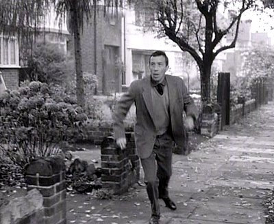


Unknown 2 – Mrs Warren (Kay Walsh) leaves Percy Whitehead’s house. After a walk in the park Percy Whitehead (Oliver Johnson) arrives home. Mrs Warren arrives one day to find the police questioning all the single aged men in the area. The postman (Richard Davies) is suspicious of Mrs Warren’s reaction the next time he sees her. Later, Detective Superintendent Warr (John Dearth), Commander Gideon (John Gregson) and Detective Chief Inspector David Keen (Alexander Davion) arrive in a police car to follow up a report from the local constable.


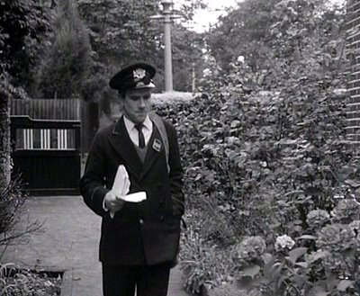
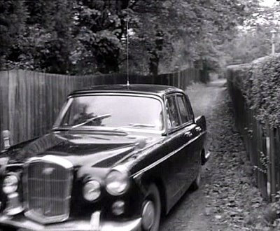

Q14 - Martha Smallwood (Kay Walsh) walks into the ladies at the tube
station (Edgware Station) to give herself and alibi after murdering Mr
Henderson. Later Martha Smallwood is followed (along
(Spotted by Jaz
Wiseman October, 2005)
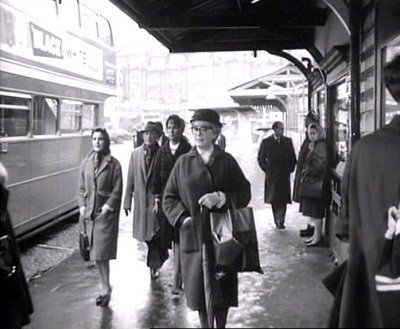 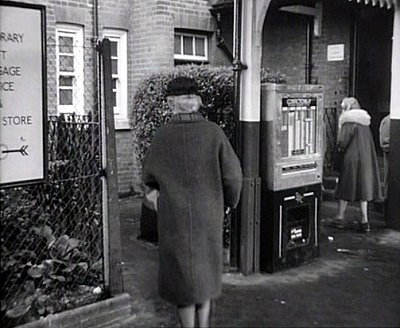


Unknown 3 - Percy Whitehead (Oliver Johnson) visits the park with his dog and is greeted by Geoffrey Carr (Middleton Woods).


St. Laurence,
(Identified by Alan Field, October 2007)

Unknown 5 – It the back of a police car Detective Superintendent Warr is told to investigate the late Mr. Henderson’s accounts by Commander George Giddeon.


(Identified by Stephen Carter, September 2007)


Unknown 7 - Ralph Maricut is picked up at the dog track by the police.
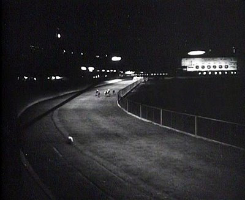
GIDEON’S WAY: The Nightlifers(John Moxey: November 1964)
Unknown 1– Peter Sloan (Anton Rogers), Sue Young (Annete Andre), Tim Coles (Peter Fowlds) and Tony King (James Hunter) cruse the area in a Bentley before Sue Young gets out to enter a late night cafe. After beating up the owners of the café the gang gets back into the car and are driven off. After the alarm is raised by a lorry driver, Keen drops in at the scene to investigate.
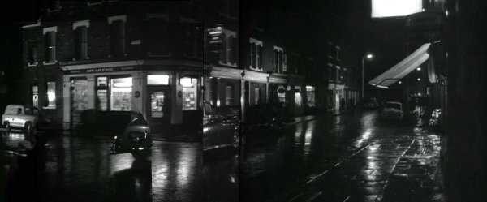
Chayne Walk, SW10 – A policeman watches as Peter Sloan (Anton Rogers), Tim Coles (Peter Fowlds), Sue Young (Annete Andre), Tony King (James Hunter) arrive back at Sloan’s houseboat to join the party. Detective Inspector Jim Caldwell (Roddy McMillan) decides to investigate a report about the party.


St Luke's Church,
(Identified by Stephen carter, August 2007)

Unknown 3 - Peter Sloan (Anton Rogers), Sue Young (Annete Andre), Tim
Coles (Peter Fowlds)
and Alison
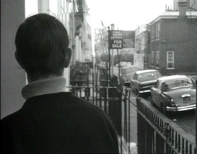 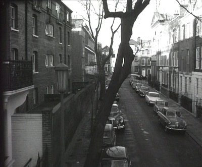 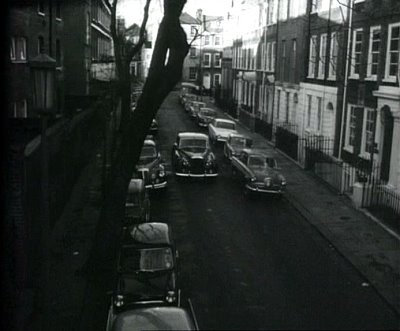 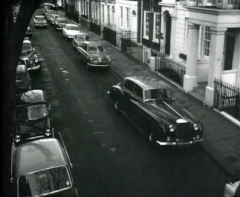
Unknown 4 - Peter Sloan (Anton Rogers), Sue Young (Annete Andre), Alison Clifton (Pauline Monroe), Tim Coles (Peter Fowlds) and Tony King (James Hunter) arrive at the home of Tony’s uncle in a Bentley.


Unknown 5- Sloan decides to beat up Elspeth McCrae to teach her a lesson. Sloan’s gang drive in the Bentley to find a phone box near her flat. They are followed by plane clothes policemen.

Unknown 6 - Sloan decides to beat up Elspeth McCrae to teach her a lesson. Sloan’s gang drive in the Bentley to find a phone box near her flat. They are followed by plane clothes policemen in a Mini.
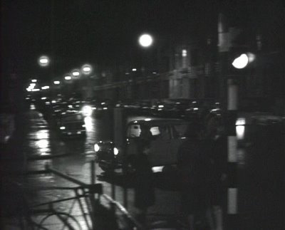 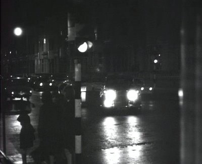


(Identified by Alan Field, August 2007)


 The striped
building is a Salvation Army hall.
The striped
building is a Salvation Army hall.


Unknown 8 - Elspeth McCrae’s (Jean Marsh) goes to the Black Crow Club as instructed. She is watched from a distance by Detective Chief Inspector David Keen (Alexander Davion).
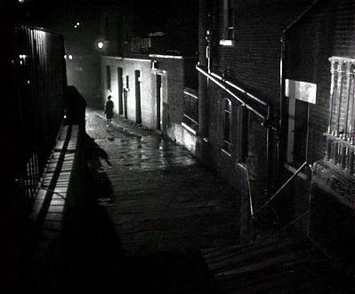
Gloucester Road, SW7 – The plain clothes men following on a Mini see Peter Sloan’s Bentley drop off Sue Young (Annete Andre) and Alison Clifton (Pauline Monroe) at the tube station.


Think you know a spot? Need a bigger image? Email me.
< Previous | Index | Avengerland | Next >
Copyright © 2003 Anthony R. McKay